CalStar 2013 (Part 1)
OR ( 10/9/13) : CalStar 2013 (part 1). by Steve Gottlieb
Sunny, warm days; socializing with old and new friends; dark, starlit nights. That's the perfect recipe for an excellent CalStar 2013 at Lake (currently a dry bed) San Antonio. With three all-nighters, there was plenty of time for loads of observations and sharing views with others.
A few years back my 24" f/3.7 might have stood out as one of the largest scopes, but there seems to be a contagious case of aperture fever going around. I was set up next to Bob Douglas' 28" f/3.7 Starstructure, Alan Agrawal's 24" f/3.3 Starstructure, Rick Linden's 22" f/4.2 Obsession UC, Mark Johnston's 18" f/3.7 Starmaster and not far from Chris Ford's 24" f/3.25 SpicaEyes, Albert Highe's 24" f/3.3 and Peter Natscher's 24" f/3.3 Starstructure! Of course, this is in addition to Paul Alsing's 25" f/5 Obsession that's been around forever.
On all three nights (Oct 3, 4, 5) seeing started off soft and improved as the night went along. My mirror probably had a difficult time keeping up with the dropping temperatures, as it dipped into the low 30's on Thursday night -- a difference of 50 degrees from daytime highs! Nevertheless, I was able to use a quite respectable 375x on galaxies to resolve details. Transparency seemed off to me, compared to last year. SQM readings (from Mark Johnston) were around 21.4, pretty good but the Milky Way did not display it's dust lanes with the same contrast as a true dark site.
On Saturday night, I focused mainly on observing small galaxy groups and Arp peculiar galaxies. The KTG designations are "Isolated Triplets of Galaxies" compiled in 1979 by Russian astronomers V.E. Karachentseva, I.D. Karachentsev and A.L. Shcherbanovskii. Their paper included 84 northern triplets mag 15.7 or brighter. The KTS designation is a similar catalogue covering the southern sky and includes 76 triplets. I've really enjoyed going through the trios in both of these catalogues, which is available for download as an observing guide (along with other trios) on Alvin Huey's web site: http://www.faintfuzzies.com/DownloadableObservingGuides2.html
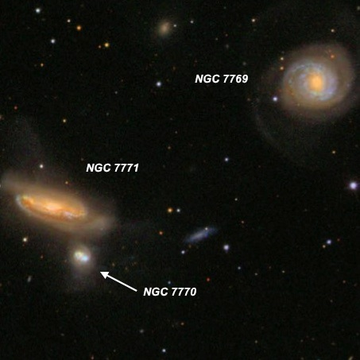
KTG 82 23 51 17 +20 07 12 Size 5.9' This bright trio is situated within the square of Pegasus, 1° NNW of 5.1-magnitude Phi Peg. At 260x, NGC 7769 = KTG 82A appeared bright, fairly large, round, 1.6' diameter, sharply concentrated with a very bright core and stellar nucleus. The low surface brightness outer halo (spiral arms) is slightly elongated and gradually fades out. NGC 7769 is the brightest component of KTG 82 with NGC 7770 and 7771 (1' pair) both 4.5' SE. NGC 7771 also appeared bright, fairly large, very elongated 3:1 WSW-ENE, 2.0'x0.7', moderate concentration with a large, elongated core that gradually increases to the center. Forms a 1.1' pair with NGC 7770 = KTG 82B. This is the smallest member and appeared moderately bright, fairly small, elongated 5:3 SSW-NNE, 0.5'x0.3', with a small bright core.
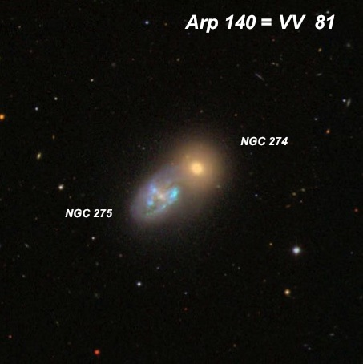
KTS 7 00 50 58 -07 00 08 Size 11.5' This triplet consists of the contact pair NGC 274 /275 = Arp 140 = VV 81, along with NGC 273 11' NW. At 75x, the brightest member NGC 274 = KTS 7B appeared bright, round, fairly small, 0.6' diameter, sharply concentrated with a small intensely bright core that gradually increases to the center, but no nucleus. This is the brighter but smaller component of a striking double system with NGC 275 = KTS 7C, which is attached on the SE side. NGC 275 appeared moderately to fairly bright, elongated 5:3 NW-SE, ~45"x27". Very unusual patchy, irregular appearance! A brighter elongated N-S patch (or arm) is on the east end. Also the southwest border is slightly brighter with a sharp, curving edge. This edge is more prominent at the NW end of the galaxy, where it merges with NGC 274 just northwest. Finally, NGC 273 = KTS 7A is moderately bright and large, very elongated 3:1 WNW-ESE, ~48"x16". Contains a very small brighter core. A mag 14 star is off the NW edge by ~20".
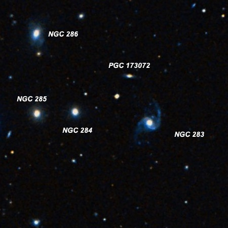
NGC 283 Group 00 53 13.2 -13 09 50 Size 5.2' This galaxy group is located 2° SE of the planetary NGC 246 in Cetus. NGC 283 is the first and largest of five galaxies consisting of four similar NGCs and much fainter MCG -02-03-03, squeezed into a 5' circle. At 375x NGC 283 appeared fairly faint, moderately large, elongated 4:3 NNW-SSE, 0.4'x0.3', weak concentration. A mag 13.5 star lies 1.6' NE. NGC 284 and 285 follow directly east by 2.7' and 4.1' with NGC 286 5.2' NE and much fainter PGC 173072 is 1.9' NNE. NGC 284 is fairly faint, small, slightly elongated N-S, 20"x15". A mag 13.5 star lies 1.6' NW. Continuing on a line to the east, NGC 285 is fairly faint, small, slightly elongated N-S, 18"x15", very small brighter nucleus. NGC 286, 3' due N, appeared fairly faint, fairly small, oval 4:3 N-S, 40"x30", weak concentration, small brighter nucleus. By a slight margin, this galaxy has the highest surface brightness in the group. Finally, PGC 173072 (misidentified as MCG -2-03-032 ) was an extremely faint and small glow, ~10" diameter, and required averted vision.
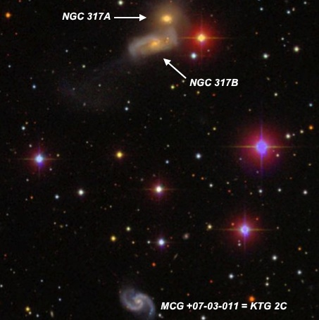
KTG 2 00 57 40 +43 45 06 Size 6.0' KTG 2A = NGC 317A and KTG 2B = NGC 317B form a contact pair oriented NNW-SSE, just 35" between centers. At 375x, KTG 2A appeared fairly faint to moderately bright, small, fairly high surface brightness (core region) ~15". With averted vision, the core is surrounded by a thin, very low surface brightness halo increasing the diameter to 25". KTG 2B appeared fairly faint, very elongated WNW-ESE, ~45"x15", weak concentration, slightly brighter core. Two mag 11.5/13.8 stars lie 1' W. A group of mag 10-13 stars is roughly 4' S and CGCG 536-014 = KTG 2C lies 6' S, beyond this asterism and appeared faint, fairly small, elongated 3:2 WSW-ENE, 25"x18", low even surface brightness. STF 79, a nice 8" pair of mag 6.0/6.8 stars lies 1° NE.
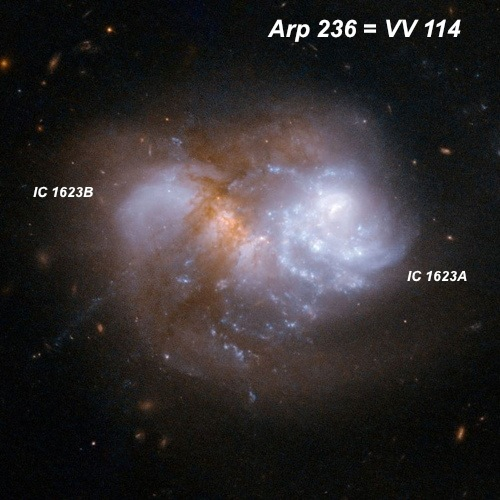
IC 1623 = Arp 236 = VV 11 = ESO 541-IG23 01 07 47.2 -17 30 25 Size 1.2'x0.9' Arp 236 = VV 114 is in the Arp category of "appearance of fission", though this contact pair is apparently undergoing a merger and the two nuclei are separated by only 15"! IC 1623A, the brighter western component, appeared fairly bright, fairly small, round, 25" diameter, high surface brightness. IC 1634B , attached on the east end, appeared as a fairly faint, small glow that not separately resolved, just a bulge or knot on the east end. 365x revealed a broad concentration with a brighter nucleus. Research reveals the IC 1634B is optically obscured but very bright in the infrared indicating intense star formation. IC 1622 lies 3.1' SW and appeared fairly faint, fairly small, round, 25" diameter. 365x revealed a broad concentration with a brighter nucleus. This image is a close-up of the system from the HST.
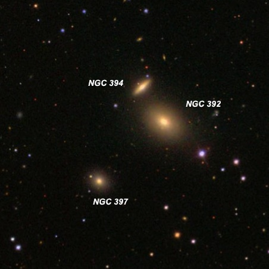
KTG 3 01 08 27 +33 07 42 Size 2.7' This small, physical triplet (spans only 2.7') contains three NGC galaxies; NGC 392 = KTG 3A, NGC 394 = KTG 3B and NGC 397 = KTG 3C. NGC 393 , the brightest member appeared fairly bright, fairly small, slightly elongated SW-NE, 30"x25", increases to a bright stellar nucleus. A mag 13 star lies 1.2' SW. Forms a close pair with NGC 394 1.0' NNE. At 375x it was moderately bright, fairly small, elongated 2:1 NW-SE, 0.4'x0.2', with a small brighter core. Lastly, NGC 397 was fairly faint, small, 15"x12", slightly elongated SW-NE, very weak concentration. Also in the immediate vicinity is IC 1619 , 13' WSW and UGC 692 15' SW.
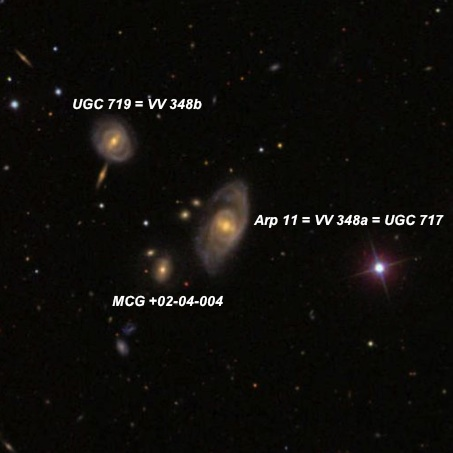
Arp 11 = VV 348 01 09 22.0 +14 20 32 V = 13.6; Size 1.5'x0.7'; Surf Br = 13.5; PA = 162d UGC 717 = Arp 11 (category "Spiral Galaxies: split arm") is the brightest in a small triplet. At 375x it appeared fairly faint, fairly small, round, 35", even surface brightness. This description appears to apply to the core region and the low surface brightness arms were not noticed. Forms a close pair with much fainter MCG +02-04-004 1.1' SE, though the companion is apparently in the background at 800 million l.y. A mag 12 star lies 2.3' WSW. MCG +02-04-004 appeared faint, very small, round, 10" diameter. UGC 719 , just 2.1' NE, completes a nice compact triplet. I logged it as faint to fairly faint, small, slightly elongated ~N-S, ~24"x20", very weak concentration. The distance of this galaxy and UGC 719 is roughly 500 million light years.
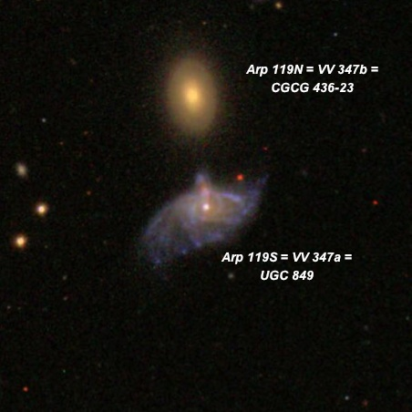
Arp 119 = VV 347 01 19 24.6 +12 27 43 V = 13.9 and14.1; Size 0.8'x0.5' and 1.2'x0.6' Arp 119N = VV 347b is the slightly brighter (higher surface brightness) of a close pair with disrupted Arp 119S = UGC 849. At 375x, the northern component appeared fairly faint, small, elongated 4:3 N-S, ~20"x15", very weak concentration. Arp 119S = VV 347a, a highly disturbed galaxy just 0.9' S, appeared fairly faint, small, slightly elongated ~E-W, ~25"x20" (central region only seen). Located 4.5' NNW of a mag 9.6 star. PGC 1410939 lies 6' NW and was logged as extremely faint and small, round, 10" diameter. On the SDSS image, UGC 849 is strongly disturbed with an unusual asymmetry. It features an offset nucleus on the north side, a spike or filament extending north towards CGCG 436-023 and numerous blue, thin knotty "sprays" or arcs with extensive star formation.
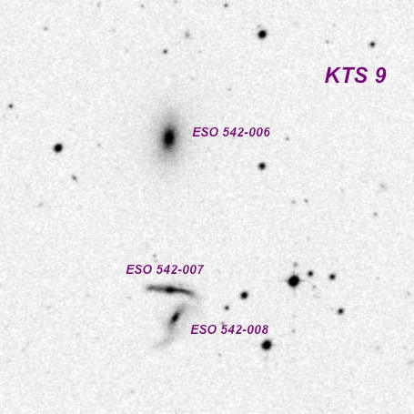
KTS 9 01 20 35 -17 22 30 Size 3.4' KTS 9C = ESO 542-6 is the brightest member of this triplet. At 225x it appeared fairly faint to moderately bright, fairly small, irregularly round, ~25"x20" diameter, high surface brightness. KTS 9B = ESO 542-7 and KTS 9A = ESO 542-8 form a close pair of faint edge-on galaxies just 3' S. KTS 9B is slightly brighter than its partner though still appeared faint, fairly small, very elongated 4:1 E-W, ~0.4'x0.1'. KTS 9A is barely off the south side (30" between centers) and appeared very faint to faint, fairly small, very elongated 7:2 NW-SE, 21"x6". A small triangle with 1' sides consisting of mag 12.4/13.4/14.8 stars is just preceding the close pair.
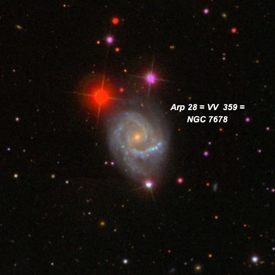
NGC 7678 = Arp 28 = VV 359 23 28 27.9 +22 25 16 V = 11.8; Size 2.3'x1.7'; Surf Br = 13.2; PA = 5d NGC 7678 is in the Arp group of "spiral galaxies - one heavy arm", which is evident visually. At 260 the galaxy is beautifully framed with a thin triangle of mag 11.3/11.4 stars to the north and a mag 12 star off the south end. It appeared fairly bright, moderately large, elongated SW-NE, ~1.8'x1.3'. Contains a brighter elongated core that increases to a very small brighter nucleus. The "heavy arm" is visible on the south side as a thin, shallow arc in the outer halo and brightens (HII knot?) right at its western tip.
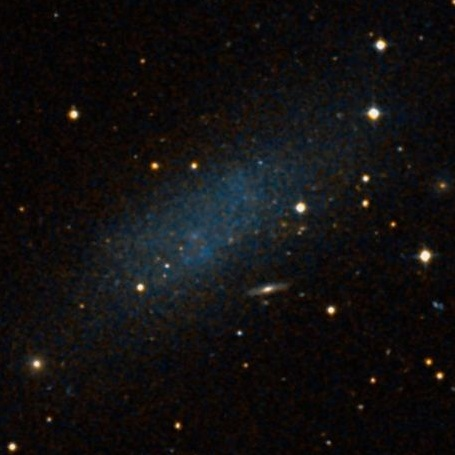
Pegasus Dwarf = Andromeda VI = UGC 12613 = MCG +02-59-046 = CGCG 431-072 23 28 34.1 +14 44 48 V = 12.6; Size 5.0'x2.7'; Surf Br = 15.3; PA = 120d The Pegasus Dwarf was picked up at 200x as a faint, large, very diffuse elongated glow with a couple of stars superimposed. This Local Group galaxy dwarf appeared roughly 4.0'x2.0', extended WNW-ESE. The surface brightness is quite low and fairly even except for a slightly brighter 30" patch (core?) near the center. A mag 14 is just within the ESE end (the patch is ~1' WNW of this star) and a brighter mag 12.7 star is embedded on the south side of WNW end.